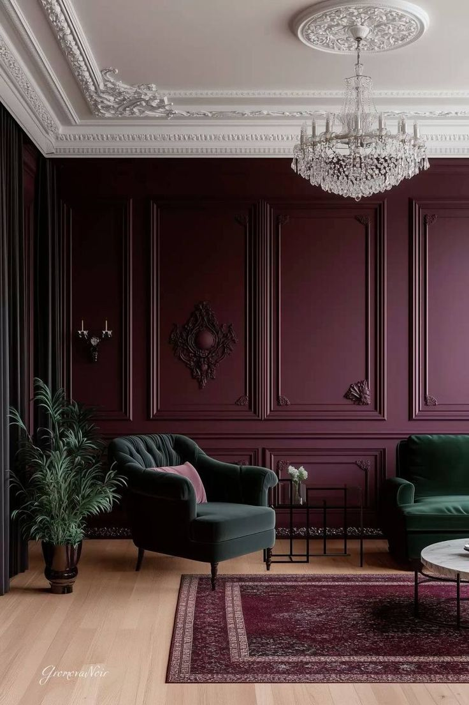

Стиль, що базується на симетрії, античних пропорціях та дорогих матеріалах. Це втілення порядку, де кожен предмет має своє місце.
Симетрія в інтер'єрі дарує мозку відчуття передбачуваності та стабільності. Такий простір допомагає почуватися впевненіше, підкреслює статус та надійність. Класика ідеально підходить для людей, чиє життя сповнене хаосу і які шукають опору вдома.